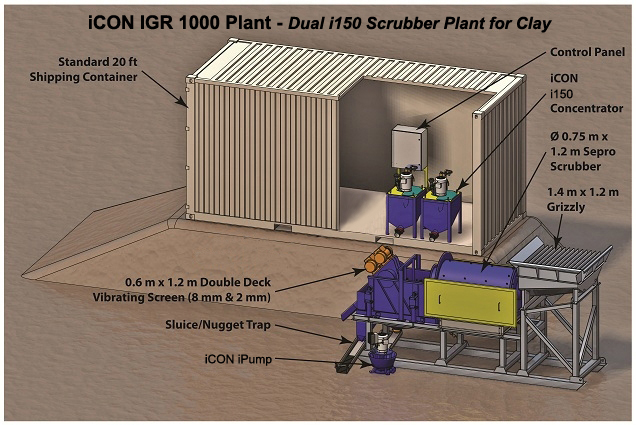
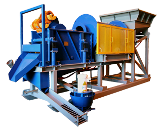
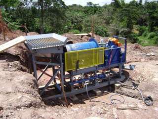

iCON IGR 1000 Gold Recovery Plant
Dual i150 Scrubber Plant for Clay
The iCON IGR 1000 Gold Recovery Plant was designed by mineral processing engineers. The classification process (double deck screen) assures that you are capturing both the big gold and fine gold efficiently. In this process the grizzly will reject any rock larger than 75 mm. The rotating scrubber will then wash the feed and break up any clay. Next, the vibrating screen will classify the material.
Any rock over 8mm will be rejected to tails. Material between 8mm and 2mm will be directed to the sluice. Material passing the 2mm screen will flow to the iPump which conveniently moves the slurry to the concentrators – wherever you choose to locate them.
Using 2 gravity concentrators, the feed to the plant must be stopped to rinse the batch concentrators. Depending on your feed this may be every 2 hours.
Installation of a third concentrator will allow continuous operation of the plant: 2 concentrators will be operating while the third is being rinsed.
This skid mounted unit ships inside of a 20’ container which you get to keep. The iPump Slurry Pump allows you to locate the gravity concentrators away from the plant in the security of the container/Gold Room.

iCON IGR 1000 Gold Recovery Plant Specifications
Includes:
- 1.2 m Grizzly with 75 mm openings c/w manual tilt
- Feed chute fabricated of mild steel
- Sepro pilot plant rotary scrubber with nominal dimensions 0.75m X 1.5m long complete with drum, steel lifter bars, rubber tire drive assembly with tires, wheels, gearbox and electric 2.2 kW drive motor and variable frequency drive
- Sepro-Sizetec .6m X 1.2m heavy duty, double deck, horizontal vibrating screen complete with electric vibrating motors, welded screen body construction and polyurethane screen panels: 8mm top deck and 2mm bottom deck. Electrical controls included
- 0.25 m x 1.2 m Sluice to treat 2mm to 8mm Aggregate
- Skid frame assembly for mounting scrubber and screen similar to that shown on drawing. Complete with water distribution manifold for scrubber, vibrating screen, also includes integral sluice box for coarse gold recovery, screen oversize discharge chute
- 2 iCON i150 Concentrators complete with VFD drive, 2 hp electric motor. The concentrators are used to process the 2 mm minus material.
- iCON iPump 1.5 with VFD drive and 2 hp electric drive motor
- Wiring for on plant equipment (suitable for 220 / 50-60hz / 3 phase)
- One good quality used 20’ Sea Container for shipping – you keep it
Power Requirements:
25 kVA Generator - 220v / 1ph / 50-60Hz - 90 amps (not including water pump)
All machines are controlled by VFD’s mounted in a control console with start/stop buttons.
Water Requirements:
20 - 35 m3/hr (2” Pump recommended) Note: Clean water required for iCON. Separate water source may be required for iCONs
Feed:
Scrubber and Screen capacity are 10 tph but iCONs are limited to 2 tph each of -2mm. For example if the feed gradation is 40% passing 2mm, the plant can be fed a maximum of 10 tph. If the feed gradation is 100% passing 2mm, then the plant can be fed 4 tph.
|  |  | |
|
This is an actual photo of a plant assembled in the factory prior to shipment to Africa. |
This is an actual photo from Africa. This plant was designed to scrub the laterite clay. |
iCON Gold Recovery offers six kinds of Mineral Processing Plants.
Click below for more information on each:
iCON IGR 100 Plant - iCON IGR 500 Plant - iCON IGR 1000 Plant
iCON IGR 3000 Plant - iCON IGR 6x7 Battery Plant - iCON IGR 10K Alluvial Plant
Click below to view all of the iCON Gold Recovery Product lines:
Product Overview - iCON Concentrators
iCON Pumps - iCON Screens - iCON Plants